Anos Iniciais · Geekie
Fundamental 1
1º ao 5º ano
A pergunta não é se a escola vai permitir a IA…
…mas que formação queremos garantir.
O livro e o digital, cada um na sua hora.
Conteúdo completo, base da rotina na sala e continuidade em casa.
Mais autoria e profundidade na aprendizagem.
O Geekie One entra onde faz mais diferença: personalizar, praticar e acompanhar.
1º ao 5º ano
Investigar, experimentar, criar e desenvolver a autonomia.
Conhecimentos essenciais, organizados para consolidar passo a passo.
Curiosidade e perguntas que viram experimentação e criação.
Aprender a aprender e comunicar as próprias ideias.
Livros e recursos de cada aluno.
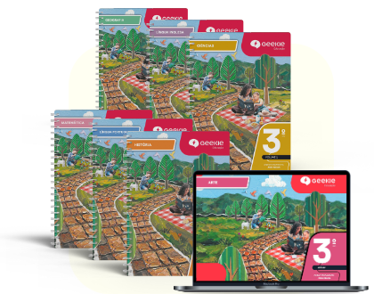
11 livros2 de Português, Matemática, Ciências, História e Geografia + 1 de Artes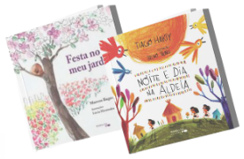
2 livros de literatura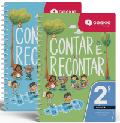
2 livros Contar e Recontar1º e 2º ano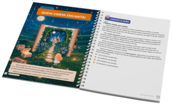
2 cadernos de produção de texto3º ano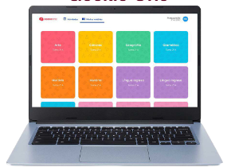
Plataforma Geekie Oneatividades extras, vídeos, jogos, visitas virtuais e quizzes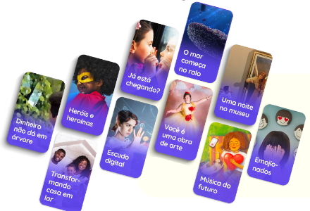
Estação20 projetos socioemocionais e interdisciplinares
6º ao 9º ano
Pensamento crítico para resolver problemas do mundo real.
Conteúdos sólidos, com progressão em todas as disciplinas.
Práticas ativas, com o estudante no centro.
Preparação para agir com responsabilidade num mundo conectado.
Impresso e digital na mesma sequência.
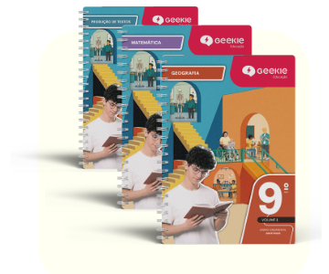
Livros impressos3 volumes por componente: Produção de Texto, Análise Linguística, Matemática, História, Geografia e Ciências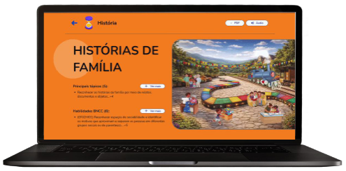
Geekie Onelivros digitais de Artes, Ed. Física, Filosofia, Inglês e Espanhol + questões extras, videoaulas e simuladores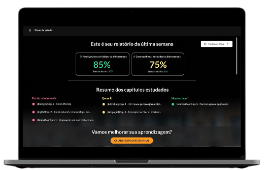
Plano de estudos personalizadocom base nas dificuldades de cada estudante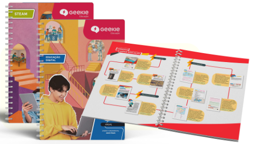
EstaçãoEducação Digital e STEAM em 1 livro anualNo 9º ano, Ciências vem num livro integrado de Física, Química e Biologia.
Riscos, desafios e oportunidades. Exercícios de programação e de como funcionam os algoritmos.
Projetos que juntam várias áreas, ligados aos Objetivos de Desenvolvimento Sustentável da ONU.
Acompanhar desde a base.
No início do ano, baseada na BNCC, orienta o novo ciclo.
Proficiência alinhada à avaliação nacional (SAEB) e à BNCC.
Programa de Competências Globais.
Cultura de alta performance e engajamento.
A família perto do que o filho aprende.
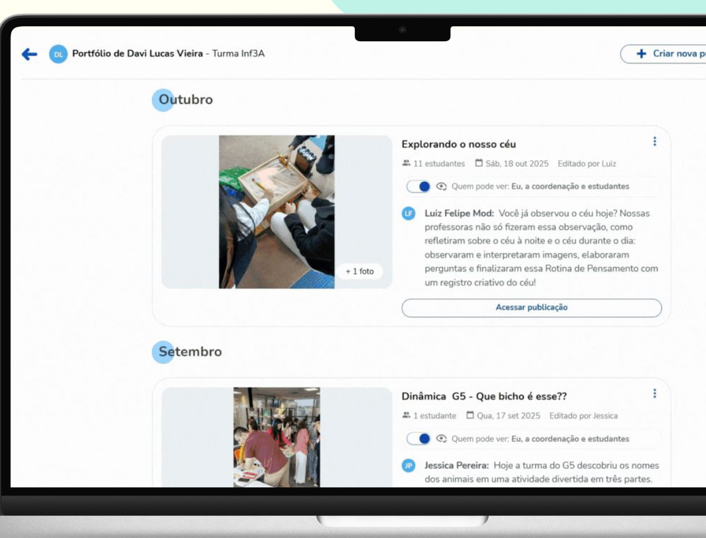
O registro da história de aprendizado do seu filho.
Fundamental 1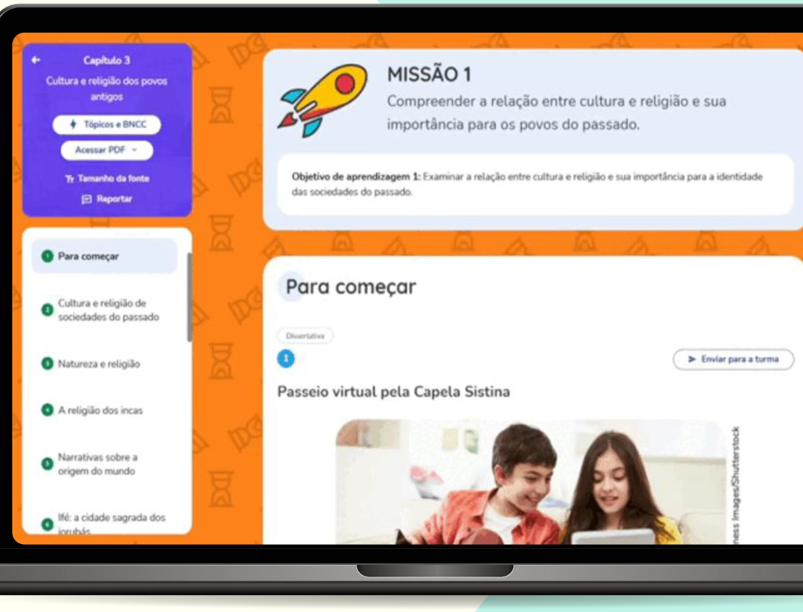
Vídeos, áudios e realidade virtual para explorar os temas.
Fundamental 1 e 2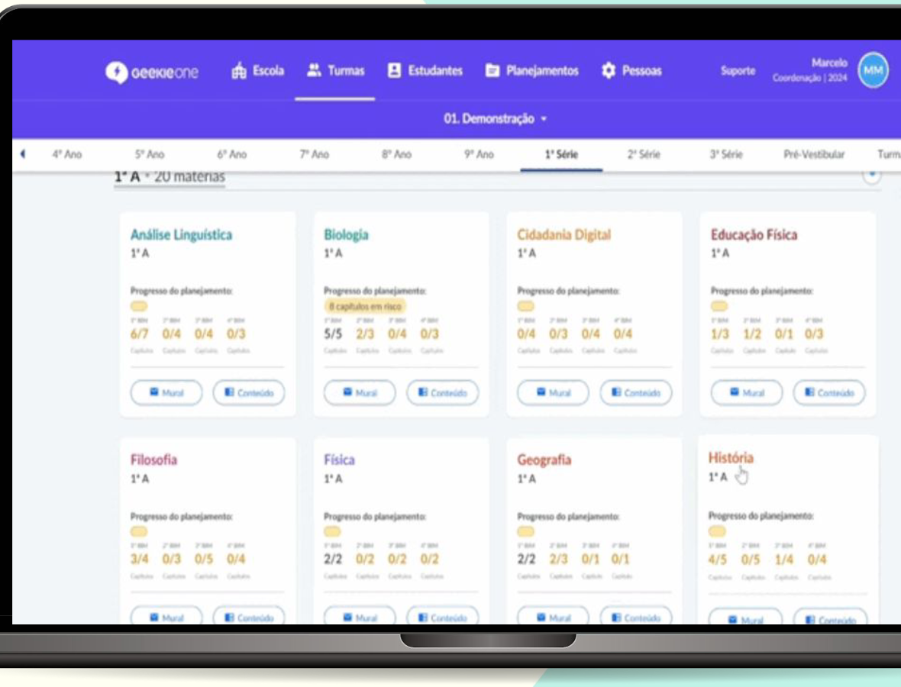
Tirar dúvidas, receber retorno e consultar materiais num só lugar.
Fundamental 2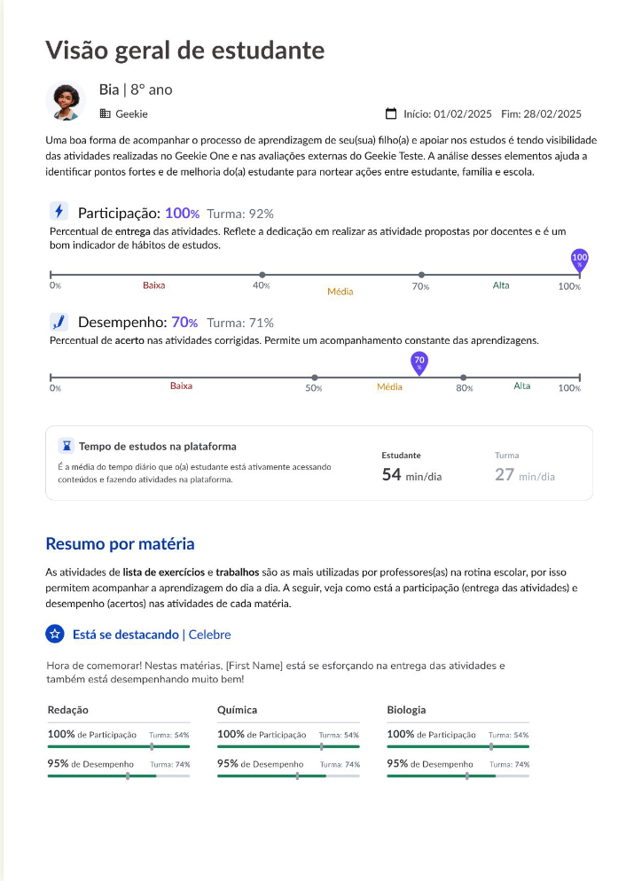
Atividades feitas, desempenho e pontos de atenção.
Fundamental 2A IA a favor de quem ensina.
Adaptação de questões para inclusão, conforme a necessidade de cada estudante.
Corretor de questões discursivas com IA: até 200% mais atividades corrigidas.
Relatório de turmas: participação e desempenho para decidir o que reforçar.
Acreditamos em uma formação que prepare para a descoberta do mundo.
Muito obrigado!